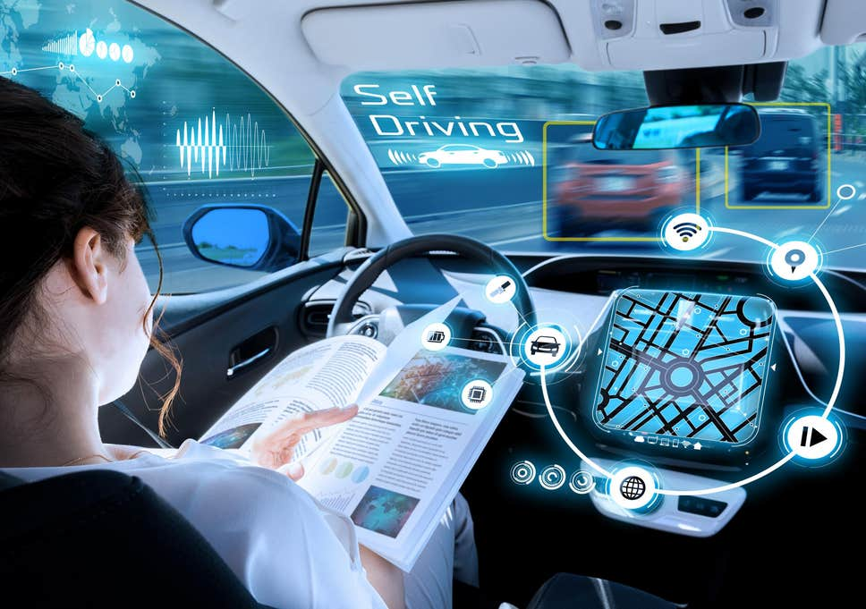
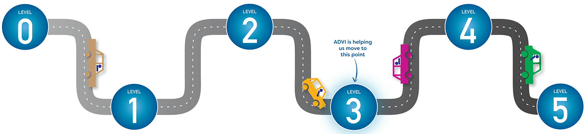
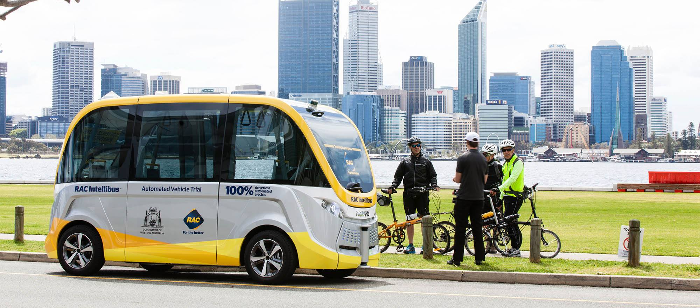
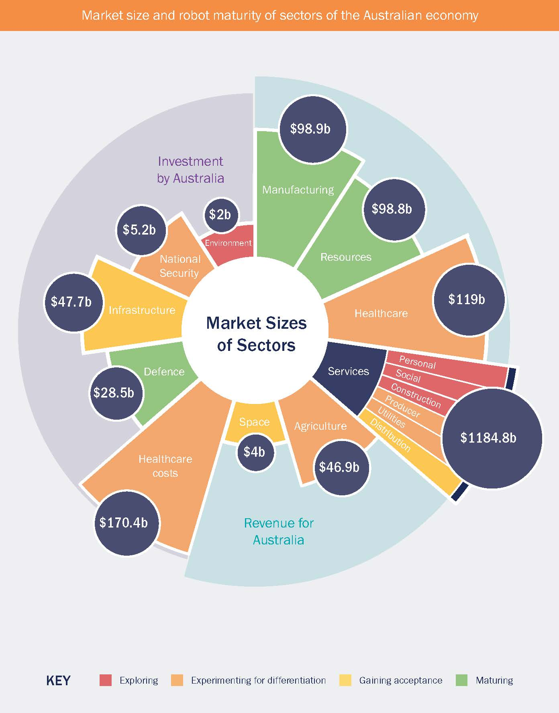
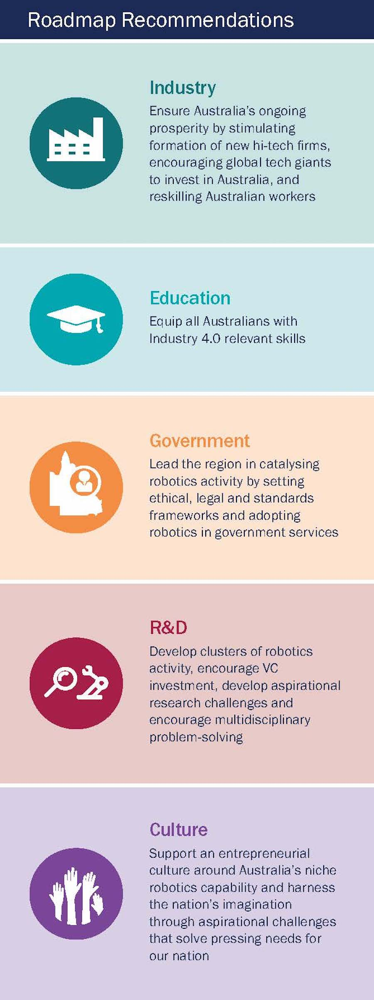
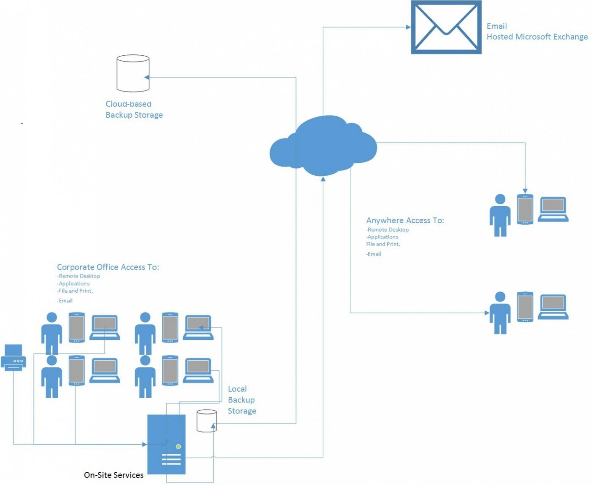

IT Technologies
Autonomous Vehicles

The idea of an autonomous vehicle has been around since the integration of
cars and microchips. The dream of sitting in a seat similar to business class flights, watching movies,
reading books and socialising with fellow passengers has been forever out of reach. However, in the
coming decades, these days may soon be within our grasp. Only now are we adapting reliable and exciting
new technologies to turn this dream into a reality. Most vehicles being released now feature some form
of automation, even if it is still only the basic cruise control system. Some vehicles are even being
released with newly developed autonomous technologies such as controlling small increments and decrements
in cruising speeds during dense traffic, also known as adaptive cruise control, cars that can reverse
parallel park without the driver's assistance and even include other features such as radar detection of
cars in other lanes and safe overtaking systems for blind spots. In the upcoming years these automatic
processes we currently have will be improved upon and will change or modify the necessary requirement of
even being in control of the steering wheel at all. As of right now we have already developed autonomous
vehicles that are completely driverless but are merely used as tour guides or used to provide elderly
and/or disabled with new mobility services in places such as retirement villages. According to ADVI -
the Australian and New Zealand Driverless Vehicle Initiative - we have attained partial automation, which
in their 5 level system of automation, places our accomplishments at level 2. While we are close to achieving
level 3 automation in the next few years, which includes all aspects of autonomous driving, the driver is
still required to be ready at all times to take control of the wheel depending on certain situations. We are
still approximately a decade from full automation and by 2026-2030, the goal of full automation may well be
achieved. Full automation is detailed as not needing a driver at all and wont even require a steering wheel
or a driver's seat in the vehicle anymore.

Over the next decade or two, this autonomous technology will be enhanced even further to incorporate various
other new technologies, some of which are still being developed theoretically and ethically. They have the
potential to include new opportunities for various industries such as the energy sector, healthcare, financial
and government services to include just a small few. From automatically paying tolls and fuel bills or fully
automatic charging electric vehicles, collecting big data to improve cities drivability and driverless
infrastructure, increasing energy efficiency to improving the safety of and even replacing the emergency services
we currently rely on today, all these individual sectors or industries will be shaped by the autonomous potential
lying ahead of us. There are a number of serious questions of ethical and social importance still yet to be
explained and answered such as the effects on governments and energy sectors who have until now resisted new
potential technological innovations and the ethical and societal questions relating to privacy with data.

Driverless or autonomous vehicles will have a large number of positive effects on the local and global communities.
These effects potentially include making roads safer, reducing congestion, increasing environmental advantages
and will even increase mobility for elderly and disabled people in these communities. This technology will also
provide a great platform to test new and ever improving renewable energy systems. It will also provide large
positive safety impacts such as the ability to give control over to the automated driving system once fatigued
and will reduce the human error in crashes, an issue plaguing local and global communities and costing billions
of dollars in repairs and renumeration alone. While there are a large number of positive effects one obvious
negative effect will be the loss of driving services provided by humans such as bus drivers and taxi drivers.
Another possible negative effect, as with all new technologies would be the teething problems associated with
reaching that goal. While it would take quite a few years to research and develop autonomous systems and
infrastructure it would require even more years still to perfect such systems. Faulty devices and programming
are very much expected and would greatly hamper a smooth overall change from manual to autonomous driving.
Robots

Robots are defined as a man-made machine that has up until now,
been primarily designed for repeating, automatic, monotonous and/or dangerous tasks. In the past their roles
included moving large heavy equipment or parts around in the forms of mechanical arms. While this purpose is
still an ideal role for a robot their evolution has dramatically accelerated in the past few decades with the
help of more powerful processors and an ever-increasing reliance on automated work. Now their roles have been
applied across a vast amount of industries, dramatically increasing safety, accuracy and efficiency, while
reducing risks and overall costs. If a repetitive or dangerous task exists, regardless of the industry, chances
are it will be cheaper, safer and more efficient to perform that task with a robot. They can paint, weld, drill,
cut, carry, dispose, they can go into a plethora of dangerous situations such as bomb disposal, nuclear radiation
zones, active volcanos, space, deep underwater, gaseous areas and warzones to name just a few. Robots generally
have 3 basic types of parts, a controller, mechanical parts and sensors. The controller is most commonly
associated with being the brain, procedurally analysing a written program written by humans. The controller is
responsible for giving tasks to the mechanical parts and collecting results or gathered information through
sensors. Thus, their limitation is the programmer's code that has been written for them. If they fail in their
task it is, in most situations, the program itself that has failed.

The efficiency and safety of robots compared to humans are so superior that their tasks are ever increasing and
replacing the roles humans have in their daily life and especially at their workplace. So far, the increase in
human jobs being replaced by robots have had, for better or for worse, a significant impact on people's lives.
From a managerial perspective, robots are never late, never sick, never take breaks, can be programmed for
multiple tasks, have greater accuracy and perfect for dangerous situations. However, they also don't have human
traits or common sense, they don't have creativity, empathy, they also don't have a personal touch or communicate
with customers. These traits are some of the reasons many people still have jobs that could very easily be replaced
by robots. Smaller businesses for example, cannot afford to change their workforce as the initial cost of robots
is tremendous compared to the initial training costs of staff. Also, if the emotion and relationship aspects of
social interaction are required for the position, then a person will always be in demand for that position. There
are, however, many new industries changing to an autonomous workforce such as agriculture, military, warehousing,
and security. Robots will also have a new but dramatic impact on future industries from house cleaning and customer
service to age care. These new roles will require the advancement of some robot sub-industries such as artificial
intelligence.
Overall the effects robots have on local communities and society as a whole is positive. From monotonous chemical
reactions in labs for vaccines and disease control to 24/7 cow milking robots guided by laser sensors. The robotic
possibilities are basically endless. As a group of IT students, we will all interact with some form of robots in
the future. From programming the control systems, monitoring systems, diagnosing problems or failures to maintaining
and repairing, our lives will be forever intertwined with the evolution of robotics.
Clouds and Servers
Clouds and Servers Cloud computing refers to large groups of servers, usually in data centres, providing computing
power and services remotely to users via the internet. This originally was used for email and data storage, and has
slowly grown to include related and new services such as document editing, file sharing, and media streaming. A major
emerging use in recent times is having software run on the cloud rather than on the users local device, which has
created the business model of Software As A Service (SAAS). Rather than a user or business having to purchase a piece
of software to keep, it can be subscribed to on a monthly or yearly basis. This has created new functions around
software development because SAAS usually has a more regular update cycle. software development often happens in the
cloud, so software can be updated and new functions developed more regularly.
As more users and business' use the cloud, all their data has to be kept separate. One method for doing this is
containers. This is a programming system which holds each virtual users' data and related files in a separate virtual
machine, with many of these virtual machines on the one physical server.

Future developments include Infrastructure As A Service (IAAS), whereby a business may have no onsite servers or
IT equipment at all. Instead all IT services are running in third party data centres, accessed remotely over the
internet. Another version of this is a hybrid cloud, which is a mix of onsite and remote IT infrastructure. IAAS has
the benefit of rather than being a large upfront cost for IT Infrastructure, instead the business has a smaller cost
based on what is used. It also allows for more flexibility to scale the resources used up and down based on demand.
Rather than a company having one large outlay spent on IT, which is then not updated for several years, this allows
services to be changed more regularly, which benefits the end user. This also changes the job types and skills needed
in IT. As there is less and less physical infrastructure at business premises, the staff that dealt with this will reduce.